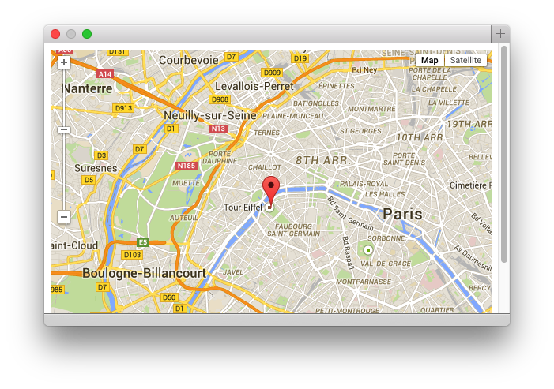

Programming
We've shown you some clients which consume OwnTracks data, but you may well wish to dip your fingers into programming something of your own. Creating a program to consume OwnTracks data isn't particularly difficult, and we're going to show you what you can do with a bit of Python together with the Paho Python client.
Getting started: Paho Python
We're assuming you have Python installed, which you can verify by attempting to invoke python -V; if installed, it tells you the version number. We're also assuming you have pip installed (a Python package manager) which may be called pip2 or something on your machine. You may have to install setuptools via your distribution's package manager.
Install the Paho Python module using
pip install paho-mqtt
Progress reports
Assume we want to create a program which should report the location of our friends, as a simple list:
TID = n4 is currently at 51.0343863, 9.4763712
TID = n7 is currently at 52.7343671, 7.8764431
TID = jp is currently at 53.134404655, 8.1063173
We need a small utility program which will subscribe to location publishes received by your broker by connecting to it on localhost and subscribing to owntracks/+/+ (a wild-card expression in which each + means anything at this level).
The Code
For each received message, the utility attempts to decode the JSON payload and then prints the tracker-ID (TID) as well as latitude, longitude coordinates. Keep a copy of our OwnTracks-JSON documentation handy and study the topic names of each possible publish by the apps.
#!/usr/bin/env python
import paho.mqtt.client as mqtt
import json
# The callback for when the client successfully connects to the broker
def on_connect(client, userdata, rc):
''' We subscribe on_connect() so that if we lose the connection
and reconnect, subscriptions will be renewed. '''
client.subscribe("owntracks/+/+")
# The callback for when a PUBLISH message is received from the broker
def on_message(client, userdata, msg):
topic = msg.topic
try:
data = json.loads(str(msg.payload))
print "TID = {0} is currently at {1}, {2}".format(data['tid'], data['lat'], data['lon'])
except:
print "Cannot decode data on topic {0}".format(topic)
client = mqtt.Client()
client.on_connect = on_connect
client.on_message = on_message
client.connect("localhost", 1883, 60)
# Blocking call which processes all network traffic and dispatches
# callbacks (see on_*() above). It also handles reconnecting.
client.loop_forever()
Micro Map
Assume for a moment that you alter the program above in such a way as that it writes your current location in JSON format to a file called me.json which could look like this:
{
"lat": 48.858334,
"lon" : 2.295134,
"tid":"JJ"
}
We could then create a Web page which would load that JSON and display a marker on a map.

index.html
<!DOCTYPE html>
<html>
<head>
<title>Micromap</title>
<meta name="viewport" content="width=device-width, height=device-height, user-scalable=no, initial-scale=1.0" />
<meta name="mobile-web-app-capable" content="yes">
<meta name="apple-mobile-web-app-capable" content="yes">
<style type="text/css">
body { font-size: 80%; }
td { border-bottom: 1px solid; border-right: 1px dotted;}
#map-canvas { height: 100% }
</style>
<script src="https://maps.googleapis.com/maps/api/js?v=3.exp&sensor=false"></script>
<script src="http://code.jquery.com/jquery-1.9.1.min.js"></script>
<script src="http://code.jquery.com/jquery-migrate-1.1.1.min.js"></script>
<script src="functions.js"></script>
</head>
<body>
<div>
<div id="map-canvas" style='width: 100%; height: 400px;'/></div>
</div>
</body>
</html>
functions.js
function initialize() {
var json = (function () {
var json = null;
$.ajax({
'type' : 'GET',
'async': false,
'cache' : false,
'global': true,
'url' : 'me.json', // URI of JSON file we create
'dataType': "json",
'success': function (data) {
json = data;
return json;
}
});
return json;
})();
var data = json;
console.log(JSON.stringify(data));
var center = new google.maps.LatLng(data.lat, data.lon);
mapOptions = {
center: center,
zoom: 12,
mapTypeId: google.maps.MapTypeId.ROADMAP,
scrollwheel: false,
disableDefaultUI: false,
panControl: false,
scaleControl: false,
streetViewControl: false,
overviewMapControl: false,
};
map = new google.maps.Map(document.getElementById("map-canvas"), mapOptions);
var LatLng = new google.maps.LatLng(data.lat, data.lon);
var m = new google.maps.Marker({
position: LatLng,
map: map,
title: data.tid,
});
}
google.maps.event.addDomListener(window, 'load', initialize);
would result in a map being displayed in your Web browser with a marker at the last location received by your MQTT broker. Note: the marker won't move; we leave that as an exercise to you, or just head over and look at some clients which do that for you.
Testing
Testing location-based apps is a bit of a, well, pain, but remember there are a few simple tricks you can apply:
- Use the publish now button in OwnTracks to fire a location update. The smart phone won't really move much of course, but it'll allow you to test your program a bit.
- Publish your own OwnTracks-JSON payload to the broker with mosquitto_pub or similar.
Last words
Consuming OwnTracks messages from your MQTT broker isn't particularly difficult, and people have built nice programs doing so.